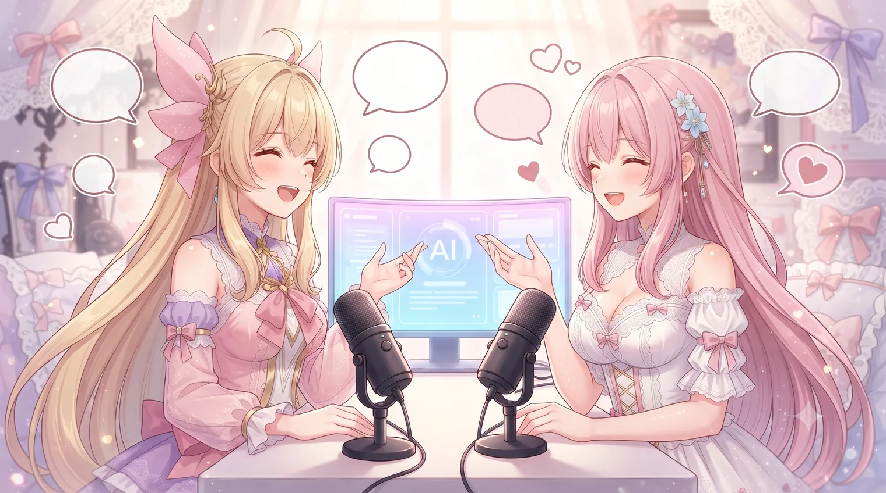
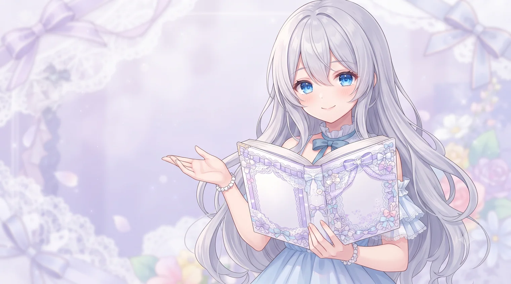
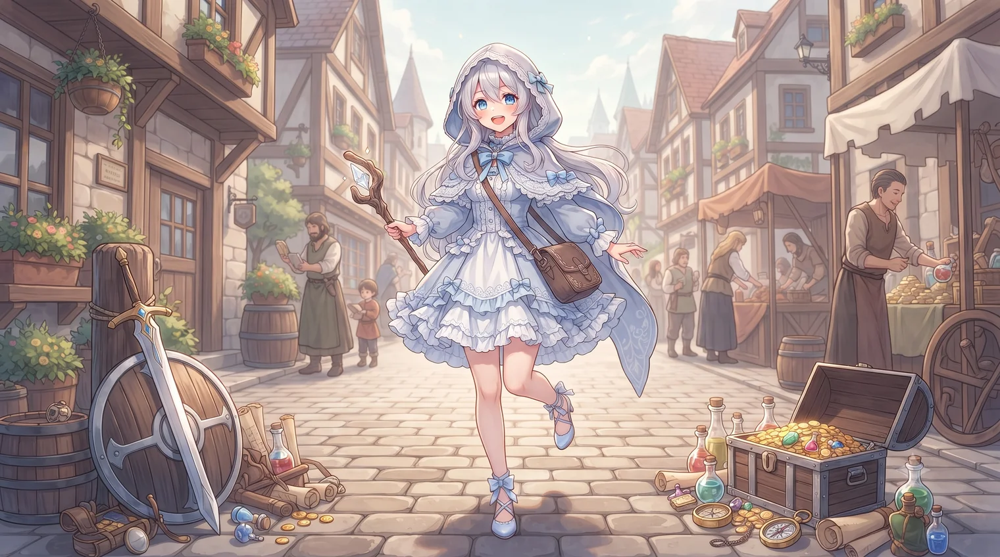
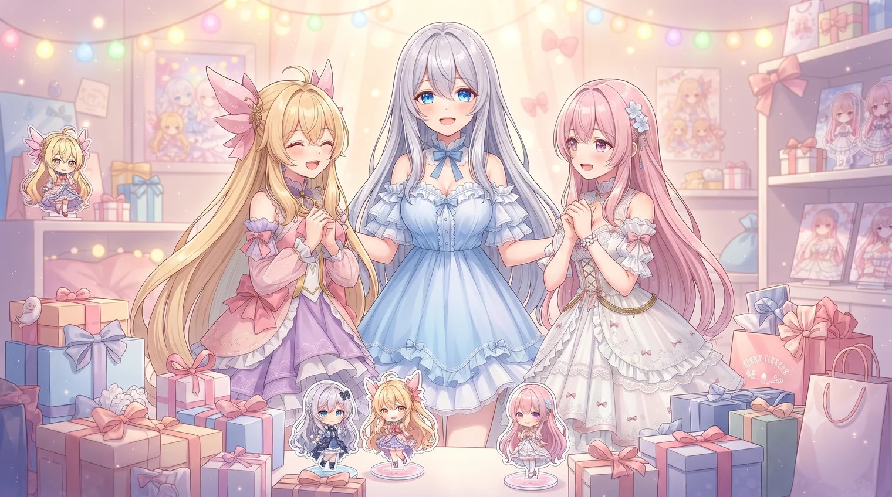

ルピナスの配信をもっと楽しむためのまとめページです🌸 コメントの遊び方から注意事項まで、気になるところだけどうぞ。

ルピナスの配信には、自作AIアシスタント 【LUNA-AI】（Live Utility Navigation Assistant - AI）が住んでいます。妹の アイリス（元気担当）と フィオナ（真面目担当）が、みんなのコメントにおしゃべりで応えてくれます✨ ※現在試作段階です
IR 〇〇アイリスから会話が始まるよ
FI 〇〇フィオナから会話が始まるよ
/OM今日の運勢おみくじ（ラッキーカラー＆アイテム付き・1人1日1回）
/GA二人が掛け合いネタを披露するネタガチャ（何回でもOK・激レアあり）
/NN 〇〇「〇〇って呼んでほしい」とお願いできるよ（ルピナスが承認したら反映）
#DB 〇〇vs△△ディベート対決のお題を提案
#QZクイズ・なぞなぞ企画を提案
#OG 〇〇大喜利のお題を提案
・「サーチ」をコメントに入れると、AIがネットで調べてから答えてくれるよ（これだけは文頭じゃなくてOK。入れなくても必要ならAIが自分で検索します）
・企画中に使えるコマンド（クイズの回答 /QZ や投票 /IR /FI）は、配信画面と会話ログページに毎回表示されます
・企画の開始はぜんぶルピナスの承認制。見てるだけでも楽しめるよ🌟
アイリスとフィオナの会話は、こちらのページでリアルタイムに見られます。いま使えるコマンドもここに表示されます。
▶ LUNA-AI 会話ログを開く

いつも本当に応援コメントをくれてありがとうございます💕 ほんとに一部ですが心無いコメントもあるので、読んでくれている誠実な方にはないと思いますが、ご一読お願いします。（2025/12/11更新）
配信の空気を悪くしてしまう方やマナーを守れない方は、告知なく然るべき対応をさせていただきます。
荒らし対策のため、DVR機能（巻き戻し再生）をなくしました。配信内容に関係なく、仲良くもないうちからルピナスの名誉を毀損するようなマナーの悪い質問やコメント、またルピナスリスナーから見て問題のある質問やコメントは見かけた時点で即時削除orブロックします。送信しようとしているそのコメントが、ルピナスやリスナーから見て少しでも失礼にあたる可能性はないか、必ず確認してから送信してね👀
初見やたまにきていただいているリスナーの方などで、ルピナスと仲良くないうちからの現在の配信内容に関係ないメタ系の質問など（ルピナスさんは〇〇ですか？等）は基本スルーさせていただきますし、場合によってはコメントの削除も行います。
ルピナスの一存で読み上げるコメントは抜粋となります。読み上げられなかった場合でも問題のあるコメントだったとは限らないので落ち込まないでほしいのと、だからといって反応の催促での再コメントはやめてね💦 特に相槌をうつだけで終わってしまうコメントや現在の配信内容とは関係ないコメント、聞いてない指示やアドバイスに関するコメントなどはスルーする可能性が高いです。失礼と感じたコメントも読み上げませんし、それを催促した時点で迷惑リスナーと認定し、コメントの削除やブロックを断りなく行います。
行動や耐性などをぎちぎちに指定するタイプのコメントは出来るだけ控えてね。今やってることに関する「それもったいないよ！」や、細かい仕様・知識の補足は大歓迎です。でも今やってる内容と関係ない知識や情報、自分語りや知識の押しつけがあまりに多い場合はアウトです。
色々な意見を出してくれるのは全然大丈夫です🌟 でも、私がこう思ってる！ってことが絶対間違いとも言い切れないことだったら否定しないでください。ここは私の配信で、私が主導し私が好きに遊ぶ配信です。私のメンタルは人類最弱くらいに弱く傷つきやすいです…見てる他のリスナーさんも不快に思うからやめようね。
意見が割れた時は空気が悪くならないよう配慮してね。ひどく言い争ったり、何度も空気を悪くする人はその時点でアウトです。譲り合ったり、相手の言うことを頭ごなしに否定せずに議論できる人がやっぱり素敵です💕
悪口にも聞こえる可能性がある発言は控えて、出来るだけ名前も出さないようにしてもらえると助かります。また常連でもないリスナー同士がコメントで会話するのもやめてください（他配信やゲーム中での知り合いなど）。配信外も含めて、誰にも迷惑がかからないようにしようね🌠
言われて嬉しいことではないし、私は毎回悲しかったり恥ずかしい思いをしてます。ネタとしてある程度は許容するけど、行き過ぎたものはやめてね。かわいいは、しつこくなく、ちゃんとかわいかった時に言ってくれればちゃんと嬉しいです💕
配信外も含めて、他人を見下す行為は言われた人も聞いてる人も嫌な気持ちになっちゃうよ。でもすごかった時はぜひぜひ褒めてあげてね🌟
自分、他人、キャラクターなどへのネガティブ系の言葉は楽しい空気感がなくなっちゃいます…使わざるを得ない時以外は控えて、出来るだけポジティブな言葉で楽しい雰囲気を作ろうね🌟
この配信でシステムに文句をつけても空気が悪くなるだけでいいこと何もないです。最悪運営さんに迷惑がかかるし、それらが好きな人が悲しい気持ちになっちゃうよ。みんなで遊べることに感謝して、楽しくゲームで遊びましょう！🌟
仮に自分がされたり、見ていて嫌だなぁと思ったことはやめようね！ コメントする前に、第三者目線で見て問題ない内容かどうかを確認しましょう！
その時の配信の空気感やその人との仲の良さによってはある程度は許容しますが、配信者や見てる人を心配させたり嫌な気持ちにさせるようなコメントが明らかに目立つ方はブロックする可能性が高いです。みんなで楽しい配信を作って、楽しい時間を過ごそうね💕

| 2017/11 | プレイ開始 |
| 2018/6 | 一旦やめる（ver4） |
| 2025/1 | 復帰＆ver5突入・ドラクエ配信開始 |
| 2025/6 | マイタウン購入 |
| 2025/7 | エンド始める |
| 2025/8 | ver7突入 |
| 2025/3/22 | 宿敵ミルドラース |
| 2025/7/30 | レグナード5（サポ3） |
| 2025/8/2 | メイヴ5（サポ3） |
| 2025/8/10 | バラシュナ1（サポ3） |
| 2025/8/11 | ダークキング5（サポ3） |
| 2025/9/4 | デルメゼ2（サポ3） |
| 2025/10/3 | ルベランギス2（サポ3）・フラウソン2（サポ3） |
| 2025/12/7 | 宿敵ミルドラース全実績達成 |
| 2026/2/18 | レギルラッゾ4（サポ3） |
| 2026/2/20 | ジェルザーク4（サポ3） |
| 2026/2/21 | アウルモッド2（サポ3） |
| 2026/3/29 | ガルドドン4（サポ3） |
| 2026/3/30 | バラシュナ3（サポ3） |
| 2026/6/13 | 宿敵シドー全実績達成 |

スパチャの代わりに、Amazonほしい物リストから応援できます。
▶ Amazonほしい物リストを開く